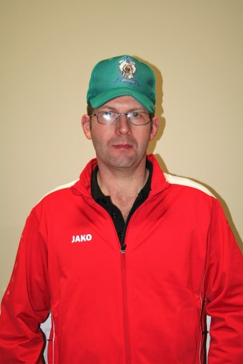

Bestuur
Bestuursleden
Voorzitter
Tuur Feyaerts
Ondervoorzitter
Johan De Cuyper
Schatbewaarder
Danny Van Der Mieren
Secretaris
François Van Esse
Sport verantwoordelijke
Roger Van Dyck
Wielertoeristen & kooklessen
Jan Vandenbroeck
Magazijnier, kooklessen, kaartspel
Geert Straetmans
Wijkmeesters
Michel De Roover (kooklessen)
Sven De Wilde
Paul Discart
Alex Feyaerts
Marcel Van Craen (wielertoeristen)
Erwin Torfs

Johan Leysen
Bart Van Loy
Geert Van Der Veken (volleybal)

Karel Van Oosterwijck
Wim Van Noten (kaartspel)
Jimmy De Cuyper
Jurgen Ooms